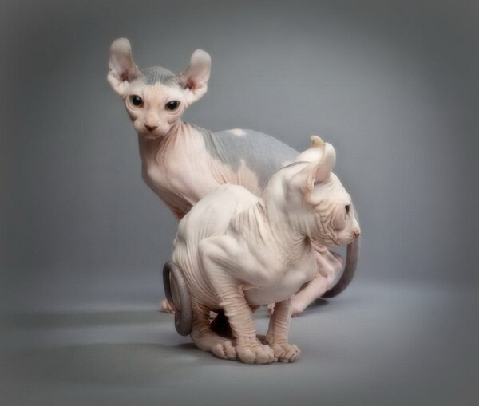
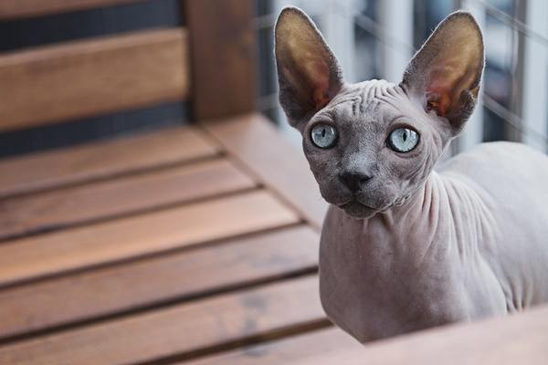

Nguồn gốc, xuất xứ của mèo Ai Cập
Thực chất, Shynx là giống mèo bị đột biến gen tự nhiên không thông qua cấy ghép, giống mèo này
xuất hiện một cách rất tình cờ. Vào năm 1966, ở Toronto, Canada có một chú mèo con ra đời là kết quả
của cuộc giao phối giữa hai chú mèo khác. Trong khi mèo bố mẹ hoàn toàn bình thường thì trên người
mèo con lại trụi hết sạch lông, trông rất hoang dã. Người ta đã cố gắng gây giống nhưng bị thất bại
vì giống mèo không lông này gặp nhiều vấn đề về sức khỏe.
Tưởng chừng sẽ biến mất mãi mãi trong lịch sử loài mèo thì đến thập niên 70, Sphynx lại quay trở
lại một lần nữa cũng chính tại đất nước Canada. Lúc này khoa học công nghệ phát triển, bằng rất
nhiều nỗ lực gây giống, những chú mèo không lông đã có được quần thể gen đủ lớn và khỏe mạnh để hình
thành nên giống mèo Sphynx ngày nay.
Đặc điểm ngoại hình của mèo Ai Cập
Nếu thoạt nhìn sẽ thấy vẻ ngoài của mèo nhân sư rất khó ưa, một con mèo nhẵn nhụi không lông với
làn da nhăn nheo non nớt như một sinh vật vừa chào đời. Nhưng có một điều kỳ lạ là nếu quan sát kỹ
hơn bạn sẽ càng cảm thấy mê đắm.
Chắc hẳn ai cũng tưởng mèo Ai Cập không có lông nhưng thực tế giống mèo này vẫn có một lớp lông tơ
mỏng bao trùm toàn cơ thể. Dù lớp lông này không có tác dụng giữ ấm nhưng lại giúp Sphynx nhạy bén
hơn so với các giống mèo khác. Mèo không lông thuộc loài có lớp da đa dạng màu sắc như: nude, hồng
phớt, đen, trắng,... Đôi khi sẽ có những cá thể có màu sắc pha trộn với nhau. Tuy nhiên những chú
mèo Sphynx có màu da càng hiếm đỏ hoặc vằn đen sẽ càng có giá trị lớn.
Không to béo như mèo images, Scottish Fold hay mèo Ba Tư, mỗi con mèo nhân sư đều có kích thước cơ
thể vừa phải, thân hình cân đối, khá cơ bắp. Ngoài không có lông, chúng còn có một điểm đặc biệt
khác nữa là không hề có ria. Kích cỡ tai mèo Ai Cập lớn, lúc nào cũng dựng đứng, mắt mở to ngơ ngác
cùng vẻ mặt nghiêm nghị. Khi càng trưởng thành, làn da của mèo Ai Cập ngày càng nhăn nheo hơn, khiến
chúng trông có vẻ già nua và hung dữ.
Vì không có lớp lông bên ngoài bảo vệ, mèo Ai Cập rất dễ bị tổn thương. Bạn nên mặc áo quần cho
những em ấy, nhất là vào những hôm trời lạnh giá.
